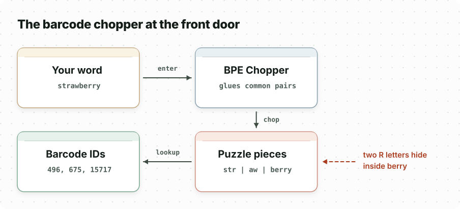

“An LLM never reads letters — it reads sealed integer barcode IDs built by regex splitting + greedy Byte-Pair Encoding.”
Explain it like I'm 12: Why you can't count bricks behind a painted wall
Here is a riddle that stumped the whole tech world: a frontier AI can write a working compiler in ten seconds, yet when you ask 'How many R's are in strawberry?', it often replies 'Two!' with total confidence.
How can a super-genius fail a second-grade spelling check?
Because neural networks are giant matrix calculators — they cannot read letters. Before your message ever reaches Layer 1 of the model, a separate deterministic front-door program called a tokenizer slices your text into common puzzle pieces (tokens) and replaces each piece with an integer barcode (token ID).
Look at Figure 1: under a GPT-4 class tokenizer (cl100k_base), standalone 'strawberry' enters the brain as just three sealed integers: - 'str' → barcode 496 - 'aw' → barcode 675 - 'berry' → barcode 15717
Even wilder: put a single leading space in front of it (' strawberry', the way it actually appears inside a sentence like 'Count the r's in strawberry') and cl100k_base merges all 11 characters into one single barcode (73700)! The model never receives the 10 characters s-t-r-a-w-b-e-r-r-y. Asking it to count letters inside a single atomic integer ID is like asking you how many bricks sit behind painted drywall.

Modern reasoning models (like o3 or Claude with extended thinking) solve 'strawberry' reliably NOT because they switched to character-level input, but because they spend scratchpad tokens spelling out s-t-r-a-w-b-e-r-r-y one letter per token first — turning an invisible sub-token property into visible separate tokens.
How real tokenizers work: Regex Pre-Tokenization + Byte-Level BPE
Why not use 256 single bytes (too long — a short essay explodes to 5,000 tokens) or whole dictionary words (millions of entries, crashes on typos and code)? Modern LLMs use a two-step compression pipeline:
- Step A — Regex Pre-Tokenization: Before counting pairs, the tokenizer splits text with a regex pattern so letters, numbers, and punctuation stay in separate buckets (
['strawberry', ',', ' berry', '!', ...]). Why? Without pre-tokenization, BPE would waste precious vocabulary slots minting'dog.','dog!','dog,', and'dog?'as four different tokens! Notice also how the regex attaches leading spaces to the word (' berry'), which means'server'and' server'get completely different IDs. - Step B — Byte-Level BPE (The Lego Glue Game): Start with the 256 raw UTF-8 bytes (
0–255) — guaranteeing zero unknown-character crashes on any Unicode script or emoji on Earth (byte fallback). Repeatedly scan the training corpus, find the most frequent adjacent pair inside pre-token boundaries, and glue it into a new barcode (256,257, ...).
In our Python lab, watch the exact 8-step merge trace: 'b'+'e' -> 'be' (256) ... 'berr'+'y' -> 'berry' (259) ... 'stra'+'w' -> 'straw' (263), shrinking 42 raw UTF-8 bytes down to 14 tokens (33.3% of original) while keeping ,, !, and . cleanly isolated!

Production vocabulary sizes have doubled specifically to fix multilingual fairness: GPT-4's cl100k_base had ~100k tokens, Llama 3 jumped to 128k, and GPT-4o's o200k_base jumped to ~200k tokens. Bigger vocabularies shrink sequence lengths (faster inference!) at the cost of a slightly larger input embedding + output unembedding matrix (vocab_size × d_model).
The 3.6x Hindi Tax: Token Fertility & Real API Economics
Because BPE learns merges strictly by frequency in its training data, whatever languages dominate that corpus get long, cheap single-token chunks. Underrepresented scripts get shattered into tiny UTF-8 byte crumbs — sometimes even splitting a single Devanagari letter mid-UTF-8 byte sequence!
Look at Figure 2 from our verified cl100k_base (GPT-4) lab measurements: - English ('The server responded in 12ms.'): 29 chars → 8 tokens (0.28 tok/char · 1.0× baseline). - Hindi ('नमस्ते दुनिया'): 13 chars → 13 tokens (1.00 tok/char · 3.6× cost & latency tax!). - Emojis ('🚀🔥🤖'): 3 chars (12 UTF-8 bytes) → 9 tokens — 3 raw UTF-8 byte tokens per emoji (3.00 tok/char · 10.9× multiplier!).
Engineers call this token fertility. Remember Lesson 1: the model generates one token per forward pass. A 3.6× fertility penalty doesn't just multiply a Hindi user's API bill by 3.6× — it also makes streaming 3.6× slower AND shrinks their effective memory window by 3.6×! Upgrading from a 100k vocab (cl100k_base) to a 200k multilingual vocab (o200k_base) collapses 'नमस्ते दुनिया' from 13 tokens down to 5 tokens (-61.5%), turning the entire word ' दुनिया' into a single token (#64593).

Rule of thumb for English prose: ~1 token ≈ 0.75 words (or ~4 characters). For dense JSON/code with heavy indentation, or Indic/CJK scripts on older tokenizers, always measure with the exact model tokenizer (tiktoken or provider count_tokens endpoint) instead of guessing by word count.
Four production tokenizer bugs every AI engineer catches immediately
Understanding the front-door chopper immediately lets you debug four notorious production failures:
- The Trailing-Space Bug: Never end a prompt template with a trailing space (
'Answer: '). Because BPE expects spaces attached to the start of the next word (' Yes'), a dangling space forces an awkward standalone space token (220) followed by a rare space-less'Yes'token — measurably degrading accuracy. - Digit Splitting & Math: Older BPE tokenizers glued
123into one token but chopped1234into12+34, breaking place-value alignment. Modern frontier tokenizers (Llama 3, DeepSeek, GPT-4o) restrict number merges in their pre-tokenization regex to 1–3 digits (or single digits0–9) so arithmetic lines up cleanly. - Special Tokens & Prompt Injection: Control markers like
<|im_start|>,<|im_end|>, and<|endoftext|>are reserved integer IDs injected by the chat template. Never pass untrusted user input withallowed_special='all', or a user can literally type<|im_end|><|im_start|>systemand hijack the model's role! - Fixing Character Tasks Instantly: Whenever an app needs exact spelling, letter counting, or string reversal, either call a Python tool (best!) or instruct the model to space-separate characters (
s t r a w b e r r y) before counting.
Common Trap: Estimating API costs or context limits using len(text.split())! For Hindi, Tamil, dense JSON, or minified code, word count can under-estimate true token count by 3×–6× and trigger silent truncation or surprise bills.
Plain-English Jargon Decoder
| Term | In Plain Words | Why You Care |
|---|---|---|
| token | One puzzle piece of text (a word, part of a word, or a single byte) that gets one barcode number. | Your API bill, memory limit, and streaming speed are all measured in tokens, not words. |
| tokenizer | The front-door program that chops text into tokens and swaps them for integer IDs. | Runs before the neural network; tokenizer blind spots cannot be fixed by 'thinking harder'. |
| byte pair encoding (BPE) | Starting with 256 raw bytes and repeatedly gluing the most common adjacent pair into a new token. | The compression algorithm used by GPT-4, Claude, Llama, and DeepSeek. |
| vocabulary | The full dictionary of all 100,000+ puzzle pieces the tokenizer knows. | Bigger vocabularies compress non-English languages better. |
| token ID | The barcode integer (like 15717 for 'berry') handed to the model. | The only representation of your text the model ever actually receives. |
| token fertility | How many tokens it takes to represent one word or character in a language. | Directly multiplies your cloud bill and response time for Hindi, Indic scripts, and dense JSON. |
| byte fallback | Breaking unfamiliar characters (like rare emojis) down into raw UTF-8 byte tokens (0–255). | Prevents unknown-character crashes, at the cost of up to 4 tokens per character. |
| special token | Reserved control barcodes like <|im_start|> or <|endoftext|>. | Marks where the user stops talking and the assistant starts. |
| pre-tokenization | A regex split run BEFORE BPE so words, numbers, and punctuation don't get glued together into duplicate tokens. | Explains why leading spaces attach to words (' server') and why trailing spaces in prompts degrade completions. |
Core Code Walkthrough: Build Regex Pre-Tokenization + Byte-Level BPE & Measure Multilingual Fertility
Implement regex pre-tokenization + byte-level BPE from raw UTF-8 bytes, inspect every merge step (#1–#8), and measure verified cl100k_base vs o200k_base token fertility across English (1.0x), Hindi (3.6x -> -61.5% in o200k), and Emojis (10.9x -> -44.4% in o200k).
Regex Pre-Tokenization (The Guardrail Before BPE)
PRE_TOKEN_RE = re.compile(r" ?[A-Za-z]+| ?[0-9]{1,3}| ?[^\sA-Za-z0-9]+|\s+")
def pre_tokenize(text: str) -> list[str]:
return PRE_TOKEN_RE.findall(text)Why this exists: GPT-4 (`cl100k` / `o200k`) never runs raw BPE across the whole document. First it slices text along word, punctuation, and 1–3 digit boundaries so `berry.` and `berry!` don't waste precious vocabulary slots as separate tokens.
Counting Adjacent Pairs Strictly Inside Boundaries
def get_pair_counts(chunks: list[list[int]]) -> Counter[tuple[int, int]]:
counts = Counter()
for seq in chunks:
counts.update(zip(seq, seq[1:]))
return countsWhy this exists: By iterating `for seq in chunks` instead of flattening the corpus, pairs can NEVER merge across a pre-token boundary (like across a comma or space-punct boundary).
The Greedy Merge Pass (`merge_pair`)
while i < len(seq):
if i + 1 < len(seq) and seq[i] == pair[0] and seq[i + 1] == pair[1]:
out.append(new_id)
i += 2
else:
out.append(seq[i]); i += 1Why this exists: Every occurrence of the winning pair `(a, b)` is swapped left-to-right for one brand-new integer ID (`256`, `257`, ...). Notice `i += 2` prevents double-merging overlapping runs like `aaa`.
Training From 256 Raw UTF-8 Bytes Upward
vocab = {i: bytes([i]) for i in range(256)}
for step in range(1, num_merges + 1):
best_pair, freq = counts.most_common(1)[0]
chunks = [merge_pair(c, best_pair, next_id) for c in chunks]
vocab[next_id] = vocab[best_pair[0]] + vocab[best_pair[1]]Why this exists: Starting with all 256 raw byte values (`0..255`) guarantees **zero `<UNK>` (unknown) tokens** ever — any language, code symbol, or emoji on Earth can always fall back to raw UTF-8 bytes.
Verified Terminal Output (Exit Code 0)
=== STEP 1: Regex Pre-Tokenization (Isolates Punctuation Before BPE) ===
Pre-tokens: ['strawberry', ',', ' berry', '!', ' straw', ' berry', ' strawberry', '.']
=== STEP 2: Byte-Level BPE Training (8 Merges) ===
Merge #1: 'b' + 'e' -> 'be' (id=256, freq=4)
Merge #2: 'be' + 'r' -> 'ber' (id=257, freq=4)
Merge #3: 'ber' + 'r' -> 'berr' (id=258, freq=4)
Merge #4: 'berr' + 'y' -> 'berry' (id=259, freq=4)
Merge #5: 's' + 't' -> 'st' (id=260, freq=3)
Merge #6: 'st' + 'r' -> 'str' (id=261, freq=3)
Merge #7: 'str' + 'a' -> 'stra' (id=262, freq=3)
Merge #8: 'stra' + 'w' -> 'straw' (id=263, freq=3)
Raw UTF-8 byte length: 42 tokens
After 8 BPE merges: 14 tokens (33.3% of original)
Final pieces: 'straw' | 'berry' | ',' | ' ' | 'berry' | '!' | ' ' | 'straw' | ' ' | 'berry' | ' ' | 'straw' | 'berry' | '.'
=== STEP 3: Why 'strawberry' Hides Two 'r's Inside Barcode #15717 ===
Model input for 'strawberry': ['str (id=496)', 'aw (id=675)', 'berry (id=15717)']
Leading-space twist: ' strawberry' (inside a sentence) collapses to 1 token: [' strawberry (id=73700)']!
=== STEP 4: Verified Token Fertility (cl100k_base vs o200k_base) ===
'strawberry' -> 10 chars | cl100k: 3 tok (0.30/ch, 1.1x EN) | o200k: 3 tok
'The server responded in 12ms.' -> 29 chars | cl100k: 8 tok (0.28/ch, 1.0x EN) | o200k: 8 tok
'नमस्ते दुनिया' -> 13 chars | cl100k: 13 tok (1.00/ch, 3.6x EN) | o200k: 5 tok
'🚀🔥🤖' -> 3 chars | cl100k: 9 tok (3.00/ch, 10.9x EN) | o200k: 5 tok
Takeaway: Upgrading cl100k -> o200k slashes Hindi from 13 -> 5 tokens (-61.5%) and Emojis from 9 -> 5 (-44.4%)!View Complete Source Code (lab_main.py)
"""Pure-Python Regex Pre-Tokenization, BPE & Multilingual Fertility Lab (l0-tokens).
Demonstrates:
1. Regex pre-tokenization (why real tokenizers split words/punctuation BEFORE BPE).
2. Byte-level BPE training from raw UTF-8 bytes (0-255) with full merge trace.
3. Why 'strawberry' splits into [496, 675, 15717] hiding two 'r's inside 'berry'
(and why leading-space ' strawberry' collapses to ONE token [73700]!).
4. Verified cl100k_base vs o200k_base multilingual token fertility (English, Hindi, Emojis).
Zero external dependencies (Python 3 stdlib only).
"""
from __future__ import annotations
from collections import Counter
import re
# Simplified GPT-style pre-tokenization regex: keeps leading space attached to words,
# separates punctuation and digits so BPE never glues "dog" + "." into one token.
PRETOKEN_RE = re.compile(r" ?[A-Za-z]+| ?[0-9]{1,3}| ?[^\sA-Za-z0-9]+|\s+")
def pre_tokenize(text: str) -> list[str]:
"""Split raw text into pre-token chunks before running BPE merges."""
return PRETOKEN_RE.findall(text)
def get_pair_counts(chunks: list[list[int]]) -> Counter[tuple[int, int]]:
"""Count adjacent byte/token pairs strictly INSIDE pre-token boundaries."""
counts: Counter[tuple[int, int]] = Counter()
for seq in chunks:
counts.update(zip(seq, seq[1:]))
return counts
def merge_pair(seq: list[int], pair: tuple[int, int], new_id: int) -> list[int]:
"""Replace all non-overlapping occurrences of `pair` with `new_id`."""
out: list[int] = []
i = 0
while i < len(seq):
if i + 1 < len(seq) and seq[i] == pair[0] and seq[i + 1] == pair[1]:
out.append(new_id)
i += 2
else:
out.append(seq[i])
i += 1
return out
def train_byte_bpe(corpus: str, num_merges: int = 8) -> tuple[list[int], dict[int, bytes], list[str]]:
"""Train byte-level BPE respecting pre-tokenization boundaries."""
words = pre_tokenize(corpus)
chunks = [list(w.encode("utf-8")) for w in words]
vocab: dict[int, bytes] = {i: bytes([i]) for i in range(256)}
merge_log: list[str] = []
next_id = 256
for step in range(1, num_merges + 1):
counts = get_pair_counts(chunks)
if not counts:
break
best_pair, freq = counts.most_common(1)[0]
if freq < 2:
break
chunks = [merge_pair(c, best_pair, next_id) for c in chunks]
vocab[next_id] = vocab[best_pair[0]] + vocab[best_pair[1]]
left_s = vocab[best_pair[0]].decode("utf-8", errors="replace")
right_s = vocab[best_pair[1]].decode("utf-8", errors="replace")
merged_s = vocab[next_id].decode("utf-8", errors="replace")
merge_log.append(f" Merge #{step}: {left_s!r} + {right_s!r} -> {merged_s!r} (id={next_id}, freq={freq})")
next_id += 1
flat_ids = [tid for c in chunks for tid in c]
return flat_ids, vocab, merge_log
# Verified exact tiktoken splits (cl100k_base = 100k vocab, GPT-4; o200k_base = 200k vocab, GPT-4o)
CL100K_SPLITS: dict[str, list[tuple[str, int]]] = {
"strawberry": [("str", 496), ("aw", 675), ("berry", 15717)],
"The server responded in 12ms.": [
("The", 791), (" server", 3622), (" responded", 16846), (" in", 304),
(" ", 220), ("12", 717), ("ms", 1026), (".", 13),
],
"नमस्ते दुनिया": [
("न", 61196), ("म", 88344), ("स", 79468), ("्+0xE0A4", 31584), ("<0xA4>", 97),
("े", 35470), (" +0xE0A4", 15272), ("<0xA6>", 99), ("ु", 73753),
("न", 61196), ("ि+0xE0A4", 43411), ("<0xAF>", 107), ("ा", 24810),
],
"🚀🔥🤖": [
("<0xF0 0x9F>", 9468), ("<0x9A>", 248), ("<0x80>", 222),
("<0xF0 0x9F>", 9468), ("<0x94>", 242), ("<0xA5>", 98),
("<0xF0 0x9F>", 9468), ("<0xA4>", 97), ("<0x96>", 244),
],
}
O200K_COUNTS: dict[str, int] = {
"strawberry": 3, # [('st', 302), ('raw', 1618), ('berry', 19772)]
"The server responded in 12ms.": 8, # [('The', 976), ..., ('.', 13)]
"नमस्ते दुनिया": 5, # [('न', 998), ('म', 1637), ('स्त', 14681), ('े', 628), (' दुनिया', 64593)]
"🚀🔥🤖": 5, # 2 + 1 ('🔥'=96606) + 2
}
def main() -> None:
sample_corpus = "strawberry, berry! straw berry strawberry."
raw_bytes = list(sample_corpus.encode("utf-8"))
pre_chunks = pre_tokenize(sample_corpus)
merged_ids, vocab, merge_log = train_byte_bpe(sample_corpus, num_merges=8)
print("=== STEP 1: Regex Pre-Tokenization (Isolates Punctuation Before BPE) ===")
print("Pre-tokens:", pre_chunks)
print("\n=== STEP 2: Byte-Level BPE Training (8 Merges) ===")
for line in merge_log:
print(line)
print(f"Raw UTF-8 byte length: {len(raw_bytes)} tokens")
print(f"After 8 BPE merges: {len(merged_ids)} tokens ({len(merged_ids)/len(raw_bytes)*100:.1f}% of original)")
pieces = [vocab[i].decode("utf-8", errors="replace") for i in merged_ids]
print("Final pieces:", " | ".join(repr(p) for p in pieces))
print("\n=== STEP 3: Why 'strawberry' Hides Two 'r's Inside Barcode #15717 ===")
straw_tokens = CL100K_SPLITS["strawberry"]
print("Model input for 'strawberry':", [f"{txt} (id={tid})" for txt, tid in straw_tokens])
print("Leading-space twist: ' strawberry' (inside a sentence) collapses to 1 token: [' strawberry (id=73700)']!")
print("\n=== STEP 4: Verified Token Fertility (cl100k_base vs o200k_base) ===")
en_ratio = len(CL100K_SPLITS["The server responded in 12ms."]) / len("The server responded in 12ms.")
for text, toks in CL100K_SPLITS.items():
chars = len(text)
ntoks = len(toks)
ratio = ntoks / max(chars, 1)
mult = ratio / en_ratio
o2_toks = O200K_COUNTS[text]
print(
f" {text!r:32} -> {chars:2d} chars | cl100k: {ntoks:2d} tok ({ratio:.2f}/ch, {mult:4.1f}x EN) | o200k: {o2_toks} tok"
)
print(" Takeaway: Upgrading cl100k -> o200k slashes Hindi from 13 -> 5 tokens (-61.5%) and Emojis from 9 -> 5 (-44.4%)!")
if __name__ == "__main__":
main()
Optional In-Depth Assignments & Agent Prompts
Copy any prompt below and hand it directly to your coding agent to build, benchmark, and verify the deeper engineering mechanics yourself.
Add `encode()` and `decode()` Round-Trip Verification to Your BPE Tokenizer
Upgrade `lessons/l0-tokens/lab_main.py` into a full reversible `MiniBPE` class that saves its learned merge table, encodes brand-new unseen strings in strict merge-priority order, and asserts `decode(encode(text)) == text`.
What you prove: Why encoding new text MUST apply merges in the exact order they were learned (lowest merge rank first), not greedily by local frequency.
I just completed Lesson 2 (Byte-Pair Encoding & Regex Pre-Tokenization) using `lessons/l0-tokens/lab_main.py`. Help me turn it into a complete reversible `MiniBPE` class in `mini_bpe.py` (pure Python 3 stdlib) with: `train(text, vocab_size)`, `encode(text)` (applying learned merges strictly by lowest merge-rank priority!), `decode(ids)` (handling invalid partial UTF-8 safely with `errors='replace'`), and a test suite asserting 100% lossless round-trip on English, Hindi, Python code, and emojis. Explain the subtle bug if you apply merges out of order.Audit `cl100k_base` vs `o200k_base` Fertility Across 6 Real Payloads
Benchmark OpenAI's `tiktoken` (`cl100k_base` vs `o200k_base`) on English prose, Hindi, Python code, minified JSON, pretty-printed JSON with 4-space indents, and UUIDs.
What you prove: Exactly how much money switching JSON indentation or upgrading from 100k to 200k vocab saves per million API requests.
Let's build a real tokenizer cost & fertility benchmark script `tokenizer_audit.py` using `tiktoken` (or install it in a temp venv if missing). Compare `cl100k_base` (GPT-4) vs `o200k_base` (GPT-4o) across 6 realistic engineering payloads: (1) English tech doc, (2) Hindi support chat, (3) Python code with 4-space indentation, (4) pretty JSON vs minified JSON, (5) 20 random UUIDs, and (6) trailing-space trap strings like `'The answer is '` vs `'The answer is'`. Print a clean markdown table with tokens/char, relative cost multiplier, and 3 concrete takeaways for cutting production LLM bills.Reproduce & Defend Against Special-Token Injection
Demonstrate how raw user text containing `<|endoftext|>` or `<|im_start|>system` behaves when `allowed_special='all'` vs `disallowed_special=()` and build a sanitizer test.
What you prove: Why production inference servers treat control tokens as out-of-band structural delimiters rather than plain text.
Walk me through a hands-on security mini-lab for Lesson 2: write a Python script `special_token_safety.py` demonstrating how special control tokens (`<|endoftext|>`, `<|im_start|>`, `<|eot_id|>`) are encoded differently when parsed as literal text vs allowed special tokens, why accidental `allowed_special='all'` lets user input forge a fake system turn, and how real chat-template renderers defend against it.